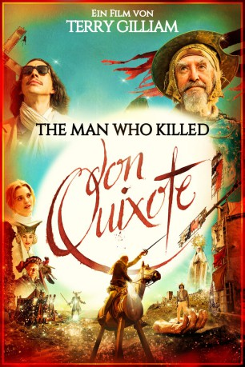
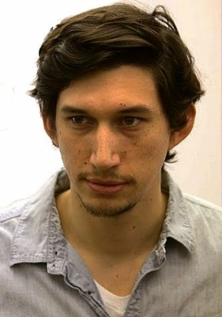
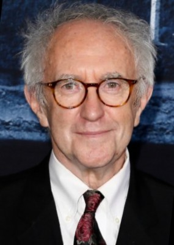
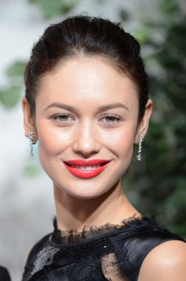
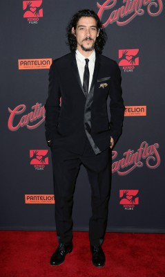
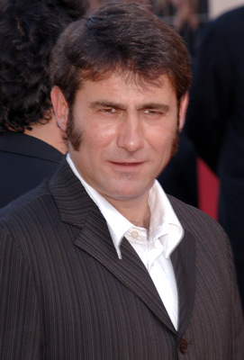
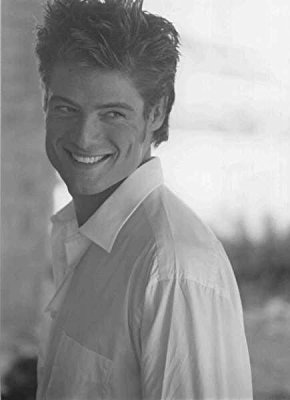
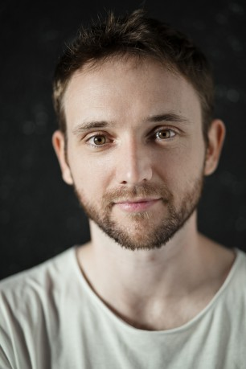

#10591 The Man Who Killed Don Quixote
 
 IMDB-Wertung: 6.6 / 10
IMDB-Wertung: 6.6 / 10  Metascore: 56
Metascore: 56 
Der abgestumpfte Werberegisseur Toby ist in Spanien, um dort einen Werbefilm abzudrehen. Als er auf einen alten Schuhmacher trifft, der sich für die legendäre Romanfigur Don Quixote hält, ist das der Beginn eines haarsträubenden Abenteuers für die beiden. Unter anderem muss sich Toby mit der Tatsache auseinandersetzen, dass ein Film, den er in seiner Jugend gedreht hat, tragische Auswirkungen für die Bewohner eines kleinen spanischen Dorfes hatte und deren Leben für immer veränderte. Toby versucht, einen Weg zu finden, um seine Taten wieder gut zu machen und endlich zurück ins Leben zu finden. Gleichzeitig muss Don Quixote seinen Wahn überwinden, um zu verhindern, dass er stirbt, und natürlich spielt auch die Liebe eine entscheidende Rolle...
Jahr: 2018
Dauer: 132 Minuten
FSK: 12
Land: Spanien Studio: Concorde FilmverleihTonspuren: DTS - ,
Untertitel: Deutsch,
Auflösung: 1080p (1920x808) Größe: 7546 MB
Genre: Drama, Komödie, Abenteuer, Fantasy
Regisseur:  Terry Gilliam
Terry Gilliam
Drehbuch: Terry Gilliam, Tony Grisoni
Soundtrack: Roque Baños
Darsteller:
-  Adam Driver als Toby
-  Jonathan Pryce als Don Quixote
 Stellan Skarsgård als The Boss
Stellan Skarsgård als The Boss-  Olga Kurylenko als Jacqui
- Joana Ribeiro als Angelica
-  Óscar Jaenada als Gitano
- Jason Watkins als Rupert
-  Sergi López als Barbero
 Jordi Mollà als Alexei Miiskin
Jordi Mollà als Alexei Miiskin- Paloma Bloyd als Melissa
- Jorge Calvo als
- Lídia Franco als
 Terry Gilliam als Giant #2
Terry Gilliam als Giant #2- Patrik Karlson als Client Rep
 Hovik Keuchkerian als Raul
Hovik Keuchkerian als Raul- Juan López-Tagle als Spanish Propman
-  William Miller als
 Rossy de Palma als The Farmer's Wife
Rossy de Palma als The Farmer's Wife- Viveka Rytzner als Junior Creative
-  Bruno Sevilla als Creative Creep
- Mario Tardón als Priest / Monk
- Diogo Andrade als Noble Dancer
- Eva Basteiro-Bertoli als Dorothea - Princess Micomicona
- Jimmy Castro als Toby's Cameraman
- Maria d'Aires als
- José Luis Ferrer als Don Quixote (Commercial)
- Laura Galán als Dumpy Girl
- Alberto Jo Lee als Translator
- Eudald Magri als Alexeis Taylor
- Joe Manjón als Toby's mate
- Eva María Milara als Doncella
- Bruno Schiappa als
Datei: X:\2018(G-M)\Man Who Killed Don Quixote, The (2018, FSK12, 1920x808).mkv seit 28.01.2019
Festplatte: HD 2018(G-Z)-2019(A-Z)
 Es gibt insgesamt 138 Filme in der Gruppe '2018(G-M)'
Es gibt insgesamt 138 Filme in der Gruppe '2018(G-M)'